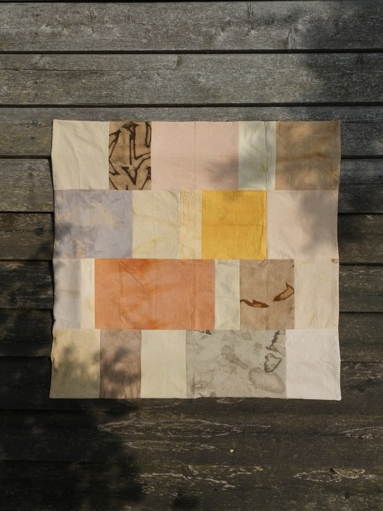
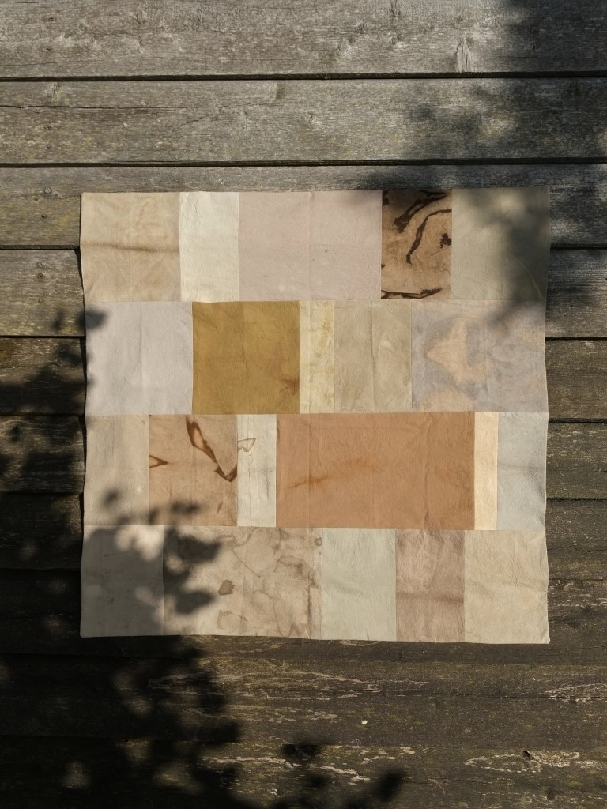

Versetzen
Umschichten
Verlegen
Über Annäherungen und Gespräche
Mit Luise Häuser, David Heitz
vorgefundenes Material
Kieselsteine
Schotter
Sand
Moose
Blätter
Rinde
Das ist eine Bildunterschrift

Das ist eine Bildunterschrift

Das ist eine Bildunterschrift
entziehen
herausziehen
lösen
versetzen
umlegen
hinhören
lauschen
Das ist eine Bildunterschrift